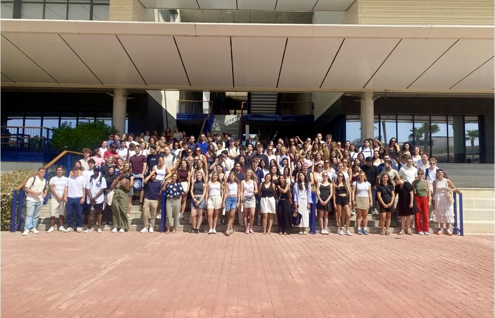

Who we are
My name is Martina Reverberi, I am 24 years old and I come from Reggio Emilia, Italy. I am currently pursuing my Master’s degree in Computer Engineering with a specialization in Artificial Intelligence at University of Parma (UniPR). Outside of university, I enjoy traveling, reading, and exploring new cultures — passions that perfectly align with the Erasmus spirit.
My name is Nicholas Braglia, I am 21 years old and I come from Modena, Italy. I am studying for my Bachelor’s degree in Computer Engineering at University of Modena and Reggio Emilia (UniMORE). For me, Erasmus is more than a study program: it is the opportunity to step outside my comfort zone, to grow as both a student and a person, and to experience a completely different cultural environment.
Erasmus Experience
Starting our Erasmus journey in Seville has been an adventure full of emotions. The excitement of arriving in a new city was mixed with the uncertainty of not knowing exactly what to expect. From the very first days, we had to get used to new rhythms: Spanish schedules, warm evenings full of people in the streets, and a way of life that is both relaxed and vibrant at the same time. What initially felt challenging soon turned into the beauty of discovery.
Erasmus is not just about studying in another country. It is about learning to live differently, about sharing moments with people from all over the world, and about building experiences that will stay with us forever.
Why we chose Loyola University
Choosing Loyola University in Seville was not a random decision. We were looking for an institution that combined our academic background with an international and multicultural atmosphere, and Loyola was exactly that. Here, teaching is interactive and dynamic, with professors encouraging debates, teamwork, and creative approaches to learning.
But what really convinced us was the environment: students from so many different countries, all sharing the same curiosity and willingness to connect. Visit Loyola's Official Website
Discovering Seville
Seville is not just a city — it is an experience that surrounds you from the very first moment. The colors of the houses, the orange trees, the sound of flamenco, and the energy of people in the streets make it feel like a living painting. Walking through Triana, admiring the beauty of the Catedral de Sevilla, or sitting under the sun at Plaza de España has already become part of our daily lives.
Challenges and Growth
Moving abroad is exciting, but it also means facing challenges. Learning to adapt to a new language, handling bureaucracy, and balancing our studies with daily life in a foreign city is not always easy. But these challenges quickly become opportunities to grow stronger and more independent.
- Getting used to Spanish schedules and lifestyle
- Learning academic terms in English and Spanish
- Building friendships with students from all over the world
Favorite Moments
So far, we have already collected unforgettable memories:
- Our first tapas night, where we felt like part of Seville for the first time.
- The Erasmus welcome event at Loyola University, where strangers became friends in a matter of hours.
- A trip to Córdoba, where history, beauty, and laughter made the day unforgettable.
What’s Next?
Even though Seville already feels like home, our Erasmus adventure is far from over. We are planning to travel and make the most of every single moment: discovering the beaches of Cádiz, enjoying the vibrant streets of Málaga, and visiting new cities around Andalusia. Beyond Spain, we dream of exploring Portugal and even crossing into Morocco.
For us, Erasmus means exactly this: to study, to grow, but also to live fully. To explore, to connect, and to create memories that will last a lifetime.